Watch the original Metis DemystifyDS conference talk, with Q&A
When you come to the field of data science for the first time, or even if you’ve been in it for a while, you can be easily overwhelmed by the number of tools and the vast range of skills required. Blog posts about what it takes to become a data scientist devolve into laundry list of skills you don’t have yet and tools you haven’t learned yet. This is discouraging. And it’s counterproductive.
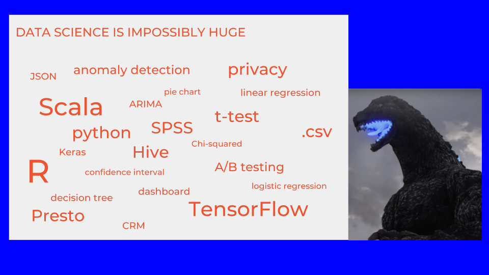My goal here is to give you a map for navigating the sprawling terrain of data science. It’s to help you prioritize what you want to learn and what you want to do, so you don’t feel lost.
These ideas are not mine alone. They are based on a series of interviews with the data scientists listed here, who are from several different companies, as well as contributors from academic data science programs. The underlying ideas are captured in a public document, offered as a resource to academic data science programs from industry data scientists—an attempt at a virtual industry advisory committee. Any insights that you get from this, I credit to the group, and any errors or inaccuracies are probably due to me alone. Overall this a compilation of a lot of people’s ideas who have thought deeply about it.
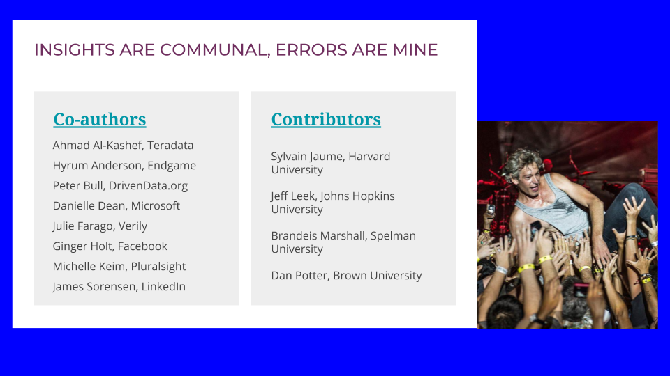The reason data science feels so big is because it’s no longer a single field. There are actually three separate pillars. There is data analysis, taking raw information and turning it into knowledge that can be acted on or that can drive a decision. There is data modeling, using the data that we have to estimate the data that we wish we had. And then there is data engineering, which is taking these analysis and modeling activities and making everything work faster, more robustly, and on larger quantities of data.
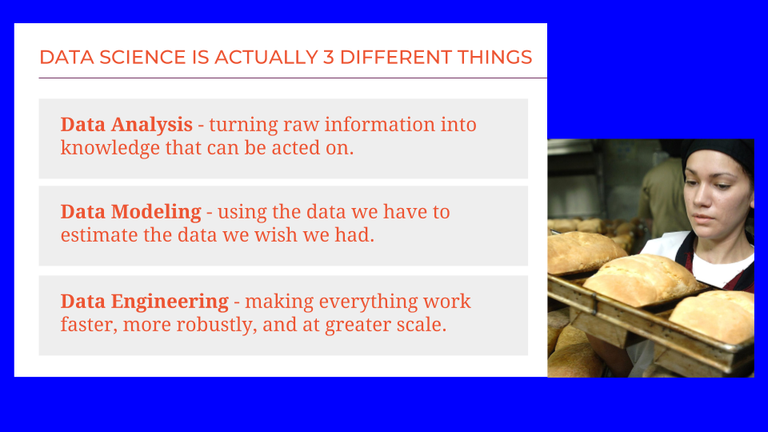These three areas are all distinct. They require different skills and different sets of tools. Let’s dive a little deeper into each one.
Data analysis
There are several aspects of data analysis, the process of taking data and turning it into information that we can use to make a decision.

Domain knowledge is the ability to translate a business need or a practical concern to a question. It involves making trade-offs between how accurate the answer should be and how much time and money you want to spend finding it. Domain knowledge is also absolutely necessary for interpreting the data, for understanding not just the numbers and labels presented, but what they reflect in the real world, what we can realistically assume about their accuracy.
Another important part of translating information into actions is research. This can can be as straightforward as performing the right Google search and reading a few documents. Often, it involves instrumenting processes that are already in place, like logging code, or adding sensors to a production line, or conducting surveys. For some applications, research involves careful design of experiments. It requires using sophisticated statistical tools to plan what information will be gathered, how it will be gathered, and how it will be analyzed after the fact.
Finally an important part of data analysis is interpretation. Given a large collection of data, how can we summarize it, aggregate it, visualize it, and use statistical summaries to go from a sea of bits to a nugget of knowledge. In particular, I want to call out the art of visualization. Turning numbers into a picture that is easily interpreted and conveys useful information is an art as much as a science. It involves an intuitive sense of human visual perception and understanding.
Data modeling
Data modeling also has several major subcategories. This is often referred to as machine learning. It is no more or less than creating a simplified description of your data that you can use to make estimates for data that you have not measured. Three main sub classes of machine learning are supervised, unsupervised, and custom model development.
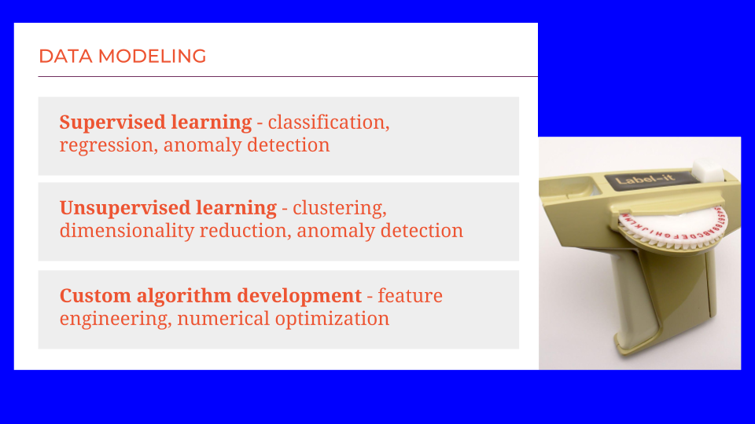Supervised learning uses labeled examples to discover patterns. These can be categorical labels, for example: Did this customer re-visit our website within the month after making a purchase, yes or no? Examples can also be labeled with numbers. For example: How many views did a video receive? Using a large collection of labeled examples, accompanied either by their category or value, supervised learning algorithms can distill the underlying patterns out. If the labels are categorical, this is called classification. If those labels are numerical, this is called regression. Also, sometimes the goal is not to make a specific prediction about future examples, but simply to determine whether they are in line with previously seen patterns. This is called anomaly detection.
A second major area of machine learning is called unsupervised learning, indicating that the data does not come with labels. We don’t know the outcome or the right answer. In unsupervised learning, the goal is to discover patterns in how the data is distributed. In clustering, groups of data points that are nearer to each other than to the rest of the data set are identified. These are natural groupings in the data. This can be done to find shopppers that buy similar items at the grocery store.
In dimensionality reduction, groups of variables that tend to behave similarly or in a coordinated fashion are identified as well, such as genes that work together to produce a desired trait. In dimensionality reduction, it’s not the data points that are being clustered, but the variables. Not the rows of the table, but the columns.
In applied data modeling, it is very common to have to do custom algorithm development. Both supervised and unsupervised learning methods are general. They begin by assuming very little about the source of the data, what it means, and what domain it resides in. General algorithms can get away with this by sheer statistical power. They are at their best when you have a large collection of data.
However, in practical applications it is often the case that we don’t have nearly as much data as we would like, and we don’t have enough to rely on naïve machine learning techniques. When this happens, we get to do custom algorithm development. We build in information that we know, or feel comfortable assuming, about the domain. For instance, one important modeling problem in the agriculture industry is to predict the yield for a field of corn, the total weight of the harvested grain. This is an unfathomably complex system, with soil texture and chemistry, genetics, temperature, and moisture interacting. And it takes a year to collect a single data point. There is no feasible way to learn a complete crop model using naïve machine learning methods. However, geologist, chemists, biologists, meteorologist, and geneticists have all investigated and described the pieces of this system. By assembling what is known and making some reasonable assumptions, a tractable crop model can be created.
Data engineering
Data engineering is the third pillar of data science. It has a few major areas. Data management is the exercise of storing, moving, and handling data. It is trivial for data sets of a few thousand or even a few million data points. But when individual data points become very complex, like an individual’s genome, or the number of data points gets into the billions or trillions, data no longer fits inside RAM on a laptop, and an entirely new set of tools needs to be used.

Another big task of data engineers is taking code that works well in a prototype and making it ready for operation in the wider world. It is one thing to build a model in a Jupyter notebook, but to be able to use that to filter every incoming customer request, the code needs to be made compatible with the rest of the company’s code base, and it needs to be able to ingest data and publish results in the appropriate formats. Any glitches or failures need to be handled gracefully, and the system needs to be made secure against mischievous or malicious users. The gap between a smoothly running prototype and production code is a big one and part of data engineering is the process of closing it.
In both data management and production, software engineering plays an important role. It’s the act of building things out of code that not only do what you want as fast as you want, but also can be shared and maintained across your current team, adapted to future changes, and scaled up or down as needs evolve. This is a craft and comes with a large collection of tools and specialized skills.
Data mechanics
There’s also a surprise pillar number four, data mechanics. This is the dirty work that everyone needs to do but nobody likes to talk about. It includes things like data formatting, making sure your types are consistent, getting the information you want out of strings, making sure the strings in use are valid, handling errors gracefully. It also includes value interpretation, handling dates and times in an interpretable and consistent way, responding correctly to missing values, making sure units of measurement are consistent and documented. And it includes the fundamentals of data handling: querying, slicing, and joining. This lets you pull the subset of data that you want for an operation from the great lake of what you have available.
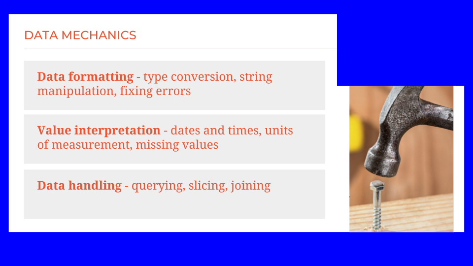Now we have our four pillars in place: data analysis, data modeling, data engineering, and data mechanics. What does this mean for you as a data scientist? These areas are all very different. I propose that a data scientist is someone who has at the very least exposure to all these skill areas. That means that you’re not necessarily an expert, or even good at them, but you know what they are, and you know the right questions to ask and right Google searches to run.
A beginner data scientist might have just a little bit of experience in each of these pillars.
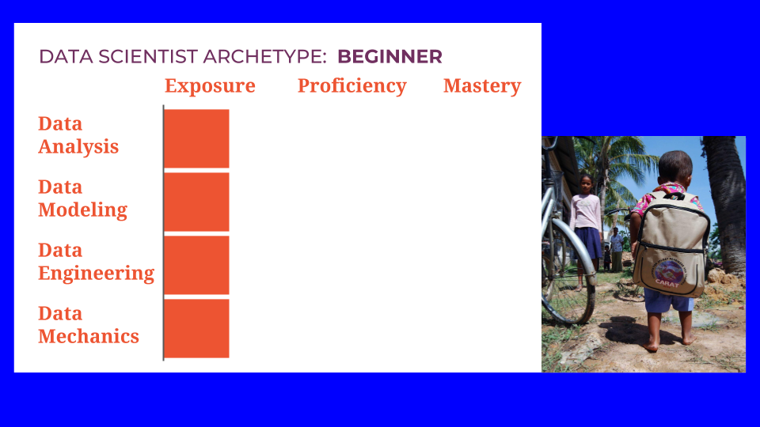With this as a base we can walk through some data scientist archetypes. It’s my hope that these will be helpful to you in planning out your training and career trajectory.
Archetypes
One path forward is to become a data science Generalist- to develop a solid mixture of proficiency in analysis, modeling, engineering, and mechanics. A nice balance across the board gives you a broad view of problems of varying scopes. It may mean that you’ll need to collaborate with specialists for some projects. But it sets you up very well to be a technical leader or data executive.
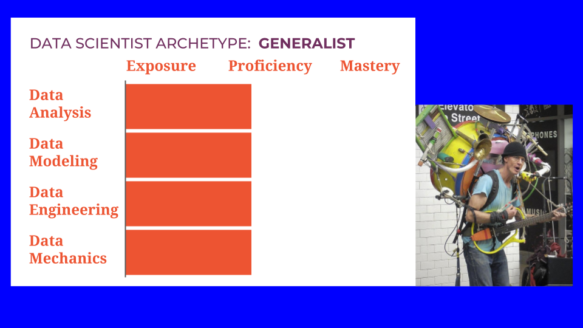Just a word of caution: there may be a tendency to neglect data mechanics or to assume that someone more junior will take care of it. The person who does this is a data scientist Diva. This is an anti-pattern. This is someone you do not want to be and you do not want to hire. Mechanics can get gritty. Some days it will occupy the majority of your time. But you never outgrow the need to do it. Embrace mechanics tasks, learn the skills you need to do them adequately, and get on with it.
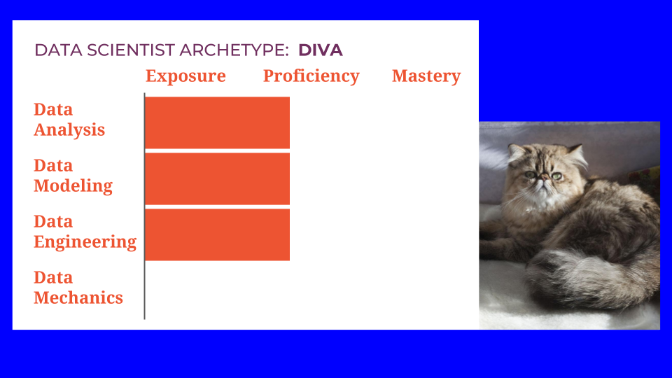There are specialist archetypes as well, emphasizing each of the three main pillars.
If you choose to emphasize data analysis, you can become a Detective, a master in discovering the right data and using it to draw conclusions. A detective is familiar with modeling and engineering methods, and uses them in a lightweight way. Analysis is their focus.
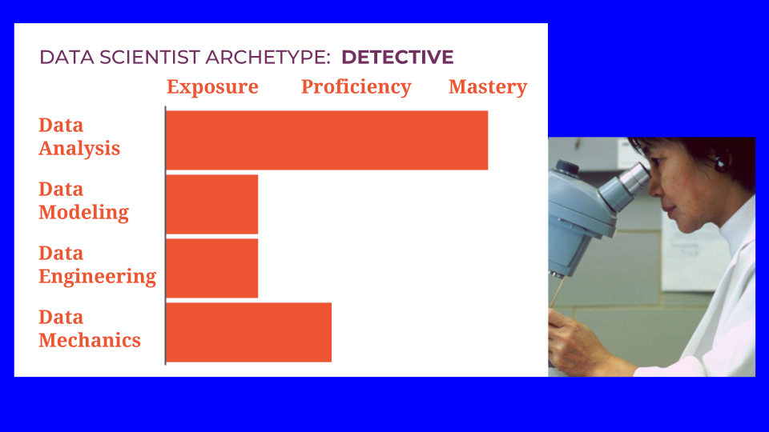Another data scientist archetype is the Oracle, someone who has mastered the skills of modeling and the tools of machine learning. They will have had exposure to analysis and engineering but their focus will be on modeling—either general machine learning models or custom, domain specific models.
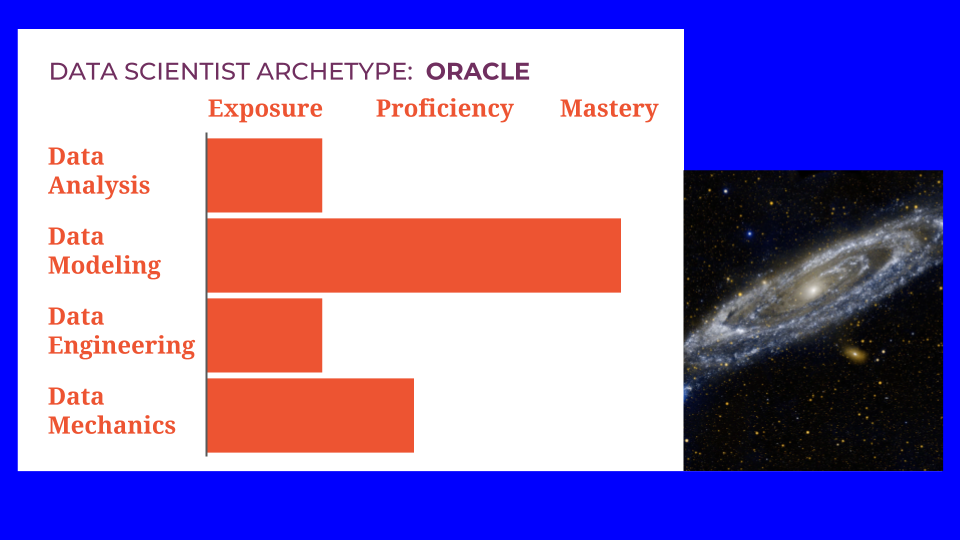Finally, you can choose to emphasize data engineering, and become a Maker. This is the person who helps everything work fast and reliably. Their work will still require some analysis and some modeling, and definitely some mechanics, but they will be focused on engineering tasks. Makers are the ones who transform good ideas into concrete machinery.
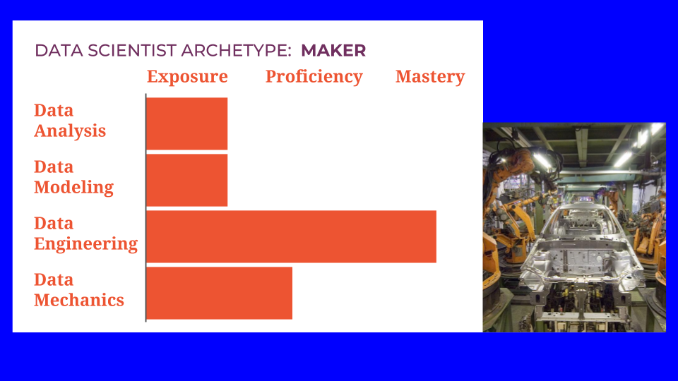Finally, there is the Unicorn. This person is a master in every pillar. This is the data science ideal. Except of course that it doesn’t exist. Becoming a master of one pillar takes a long time. Becoming a master in all three is essentially stacking three careers on top of each other. It’s not impossible to do, but it’s a long road, and the path down it passes through one of the other archetypes as a waypoint.
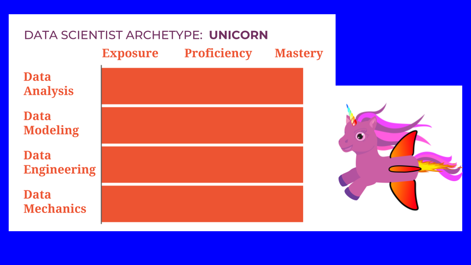The archetypes that are most useful for career planning, then, are
- The Generalist, proficient at everything,
- The Detective, a master of analysis,
- The Oracle, a master of modeling, and
- The Maker, a master of engineering.
Another way to represent these is in a 3-D plot with axes for analysis, modeling, and engineering. You can see the Detective, Oracle, and Maker each lying close to an axis. The Generalist is a balance of three, sitting in the middle of the space. I want to be completely clear that I’m not implying any hierarchy or value judgement between the archetypes. They are each invaluable and serve different functions. Let your preferences and interests guide you as you choose between them.
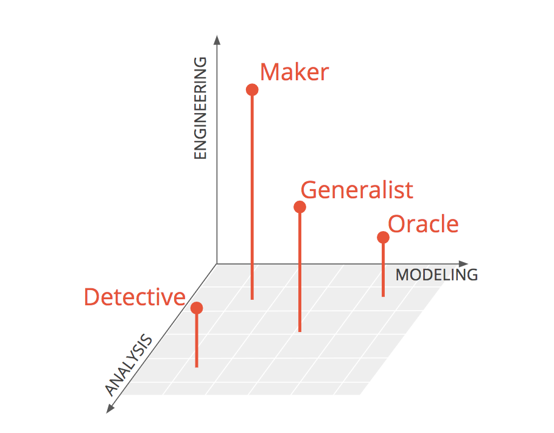Job postings
There is not a commonly accepted taxonomy for data science specializations. When looking for a job, I recommend ignoring the job titles. There’s no reliable way to translate between job title and archetype. I also recommend not worrying too much about the specific tools listed. Instead, look at this skills implied. Read between the lines to discover which archetype they want. Does the posting sound more like a Maker? A Generalist? a Detective? Based on this, you can decide whether this particular posting is a good match for you.
Also, when posting a job, ask for specific skills. Don’t ask for all of them. And don’t ask for a Unicorn. You won’t find one.
What I hope you take away from this, more than anything, is that you don’t have to be an expert at everything to be a great and successful data scientist. It’s enough to choose a direction and dive in.
Good luck! If you haven’t already picked your path, I hope this helps you plan it, and I wish you lots of success along the way.